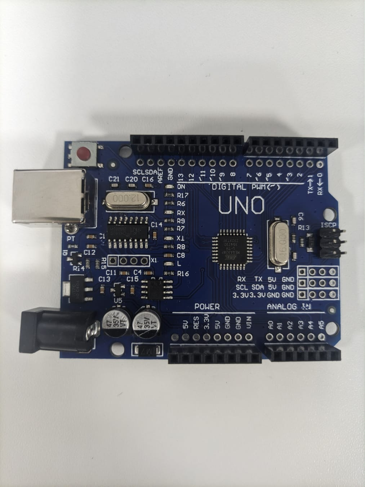

Arduino

O Arduino é um microcontrolador usado para automação e prototipagem.
Entrada Analógica
Leitura de 0 a 1023 (0–5V).
Exemplo
Leitura de sensor de luz:
int sensor = A0;
void loop(){
int valor = analogRead(sensor);
}
Saída PWM
Controla brilho de LED.
Exemplo
analogWrite(9, 128);